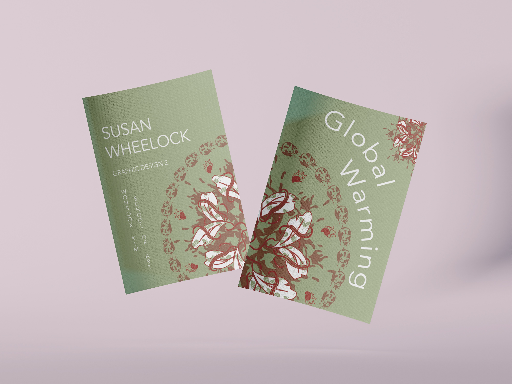
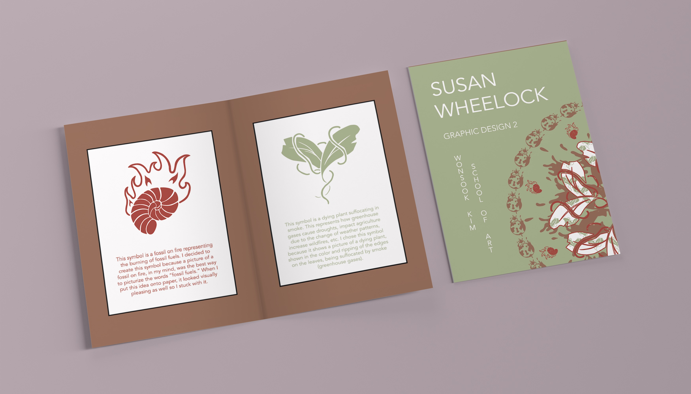
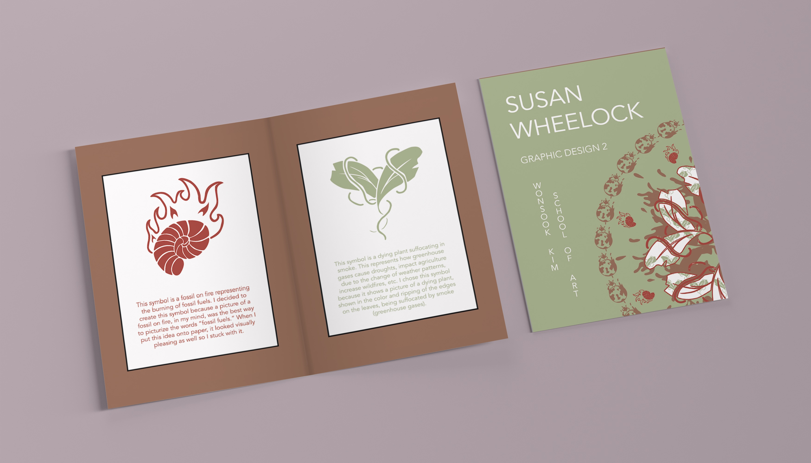
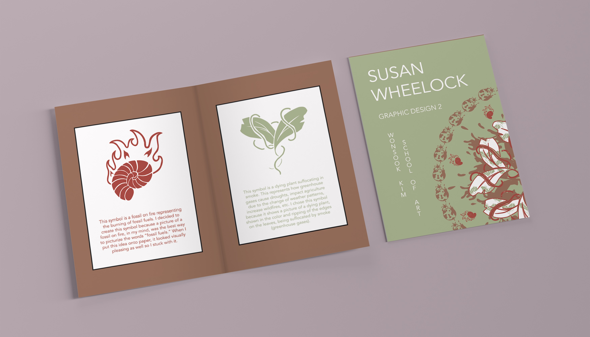

Global Warming Symbols Booklet
My directive for this zine booklet was to initially create three symbols representing resistance for a specific issue in our world, and to design these symbols into a visual representation. Then I created a composition of these symbols, including information about what they represent and visual illustrations, in a zine booklet.
I used only the colors within my original symbols to construct the zine, as well as the symbols to create other intricate illustrations throughout the booklet. When you unfold the zine, you will see a detailed, patterned artwork. This pattern is a whirlpool of my symbols, which symbolize extreme storms that occur due to global warming’s negative effects.
Tools: Adobe Illustrator
Year: Spring, 2025

 


